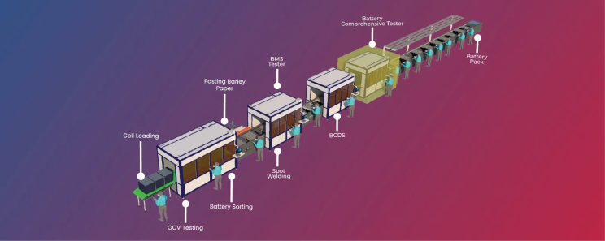

Lithium-ion battery module production processes are very important in terms of battery manufacturing These processes are crucial not only in streamlining the manufacturing workflow but also in ensuring that the final products meet stringent quality standards. As industries evolve, the efficiency and precision of these processes have become more critical.
They directly impact the overall productivity and competitiveness of manufacturing companies. This article delves into the various aspects of production modules and pack assembly, emphasizing their importance, detailing the steps involved, and exploring the technological advancements that are shaping the future of manufacturing.
Production Modules
Production modules are essentially prefabricated units that form the building blocks of larger systems or products. These modules are integral to industries such as automotive, electronics, and energy, where they facilitate faster assembly times and enhance overall production efficiency. By modularizing the production process, manufacturers can achieve greater flexibility, allowing for easier customization and scalability of their products.
Components and Materials Used
The components of production modules are diverse and depend largely on the specific requirements of the industry and the product being manufactured. Common materials include various metals, which offer strength and durability; plastics, which provide versatility and cost-effectiveness; and composites, which combine the best properties of different materials to meet specific performance criteria. Each component is meticulously selected based on its intended function, ensuring that the final module performs reliably under expected operating conditions.
Step-by-Step Production Process
- Design and Planning: The process begins with detailed design and planning. Engineers and designers collaborate to create comprehensive blueprints and specifications, ensuring that every component fits together seamlessly. This phase involves extensive simulations and modeling to predict performance and identify potential issues.
- Material Selection: Based on the design specifications, suitable materials are chosen. This selection process considers factors such as mechanical properties, environmental impact, and cost. Advanced materials science plays a crucial role in developing materials that meet the specific needs of each module.
- Manufacturing: Once materials are selected, the manufacturing phase begins. This stage involves various techniques such as machining, molding, casting, and additive manufacturing (3D printing). Each technique is chosen based on the nature of the component and the desired precision and efficiency.
- Assembly: The manufactured components are then assembled into complete modules. This assembly process can involve various methods, including mechanical fastening (screws, bolts), adhesives, welding, and soldering. The choice of assembly method depends on the materials and the intended use of the module.
- Testing and Quality Control: Rigorous testing is conducted to ensure that each module meets the required specifications and standards. This phase involves functional testing, stress testing, and quality inspections to detect any defects or inconsistencies. Advanced testing technologies, such as automated inspection systems and non-destructive testing methods, are often employed to enhance accuracy and reliability.
Pack Assembly
Definition and Importance
Pack assembly refers to the process of integrating individual modules or components into a final, functional product. This stage is crucial in industries such as consumer electronics, automotive, and aerospace, where the final product must perform reliably and meet stringent safety standards. Effective pack assembly ensures that the product is not only functional but also aesthetically pleasing and user-friendly.
Components and Materials Used
The components used in pack assembly are as varied as those in production modules. They can include electronic circuits, mechanical parts, casings, and connectors. Materials commonly used range from metals and plastics to advanced composites and ceramics, each chosen for its specific properties such as conductivity, strength, and thermal stability.
Step-by-Step Assembly Process
- Component Preparation: Before assembly begins, all components are prepared and inspected for defects. This preparation stage involves cleaning, sorting, and pre-assembling sub-components to streamline the final assembly process.
- Sub-Assembly: In many cases, smaller sub-assemblies are created first. These sub-assemblies consist of several components combined into a functional unit, which will later be integrated into the final product. This approach simplifies the final assembly and enhances efficiency.
- Final Assembly: The sub-assemblies and individual components are brought together to form the final product. This stage involves precise alignment and fitting of parts, often using automated assembly lines and robotic systems to ensure high accuracy and consistency.
- Testing: Once the final assembly is complete, the product undergoes various tests to verify its functionality, performance, and safety. These tests can include electrical testing, mechanical stress testing, and environmental testing to simulate real-world operating conditions.
- Packaging: After passing all tests, the final product is packaged for distribution. Packaging ensures that the product is protected during transit and storage, maintaining its integrity and functionality until it reaches the end user.

Quality Control Methods and Standards
Quality control is a critical aspect of both production and assembly processes. It involves systematic methods to ensure that products meet specified quality standards and are free from defects. Common quality control methods include visual inspections, automated testing systems, and Statistical Process Control (SPC). Standards such as ISO 9001 and industry-specific certifications provide guidelines and benchmarks for maintaining high-quality production.
Common Challenges and Solutions
Quality control faces several challenges, including detecting subtle defects, maintaining consistency across large production runs, and complying with regulatory requirements. To address these challenges, manufacturers employ advanced technologies such as machine vision systems, which can detect defects with high precision, and automated testing equipment, which ensures consistent quality checks. Continuous process improvement methodologies, such as Six Sigma and Lean manufacturing, also play a significant role in enhancing quality control practices.
Innovations in Production and Assembly
Technological advancements have revolutionized production and pack assembly processes. Innovations such as 3D printing, advanced robotics, and machine learning have introduced new levels of efficiency, precision, and flexibility. For example, 3D printing allows for rapid prototyping and production of complex geometries that would be difficult or impossible to achieve with traditional manufacturing methods. Robotics and automation streamline assembly processes, reducing labor costs and minimizing human error.
Impact of Automation and Robotics
Automation and robotics have had a profound impact on the manufacturing industry. Automated systems can perform repetitive tasks with high precision and consistency, significantly reducing the risk of defects and improving overall efficiency. Robots equipped with advanced sensors and AI capabilities can adapt to changing production conditions and perform complex tasks that require a high degree of dexterity and accuracy. These advancements have not only increased productivity but also enhanced workplace safety by reducing the need for manual labor in hazardous environments.
Examples from Leading Companies
Leading companies in various industries have successfully implemented advanced production and assembly techniques to stay competitive and meet the demands of modern consumers. For instance, Tesla has revolutionized the automotive industry with its use of automated production lines for electric vehicles. By integrating advanced robotics and automation, Tesla has achieved remarkable efficiency and quality in its manufacturing processes. Similarly, companies like Apple have set new standards in electronics manufacturing through meticulous design, precision assembly, and rigorous quality control.
Lessons Learned and Best Practices
From these examples, it is evident that investing in technology and continuous improvement is crucial for success. Best practices in production and assembly include adopting lean manufacturing principles, which focus on minimizing waste and maximizing value; implementing regular training programs for employees to keep them updated with the latest technologies and practices; and continuously monitoring and improving processes through data-driven approaches and feedback loops.
Conclusion
Production modules and pack assembly are fundamental processes in modern manufacturing, ensuring that products are efficiently produced and meet the highest quality standards. As technology continues to advance, these processes are becoming more sophisticated, offering new opportunities for innovation and improvement. By embracing technological advancements and adhering to best practices in quality control, manufacturers can enhance their productivity, reduce costs, and deliver superior products to the market. The future of manufacturing lies in the continuous evolution of these processes, driven by innovation and a commitment to excellence.